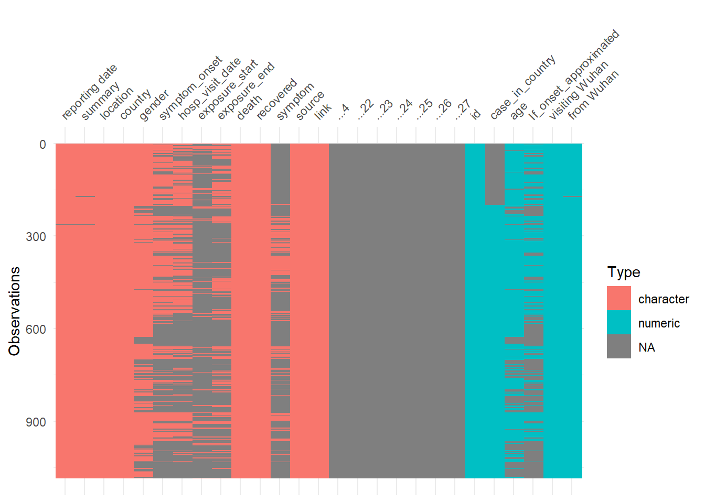
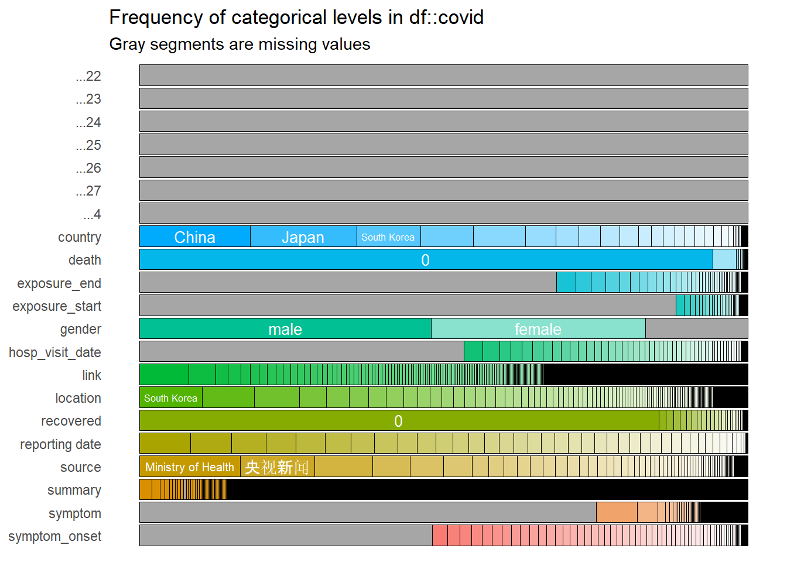
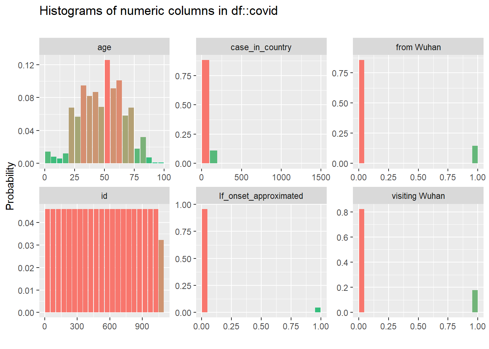
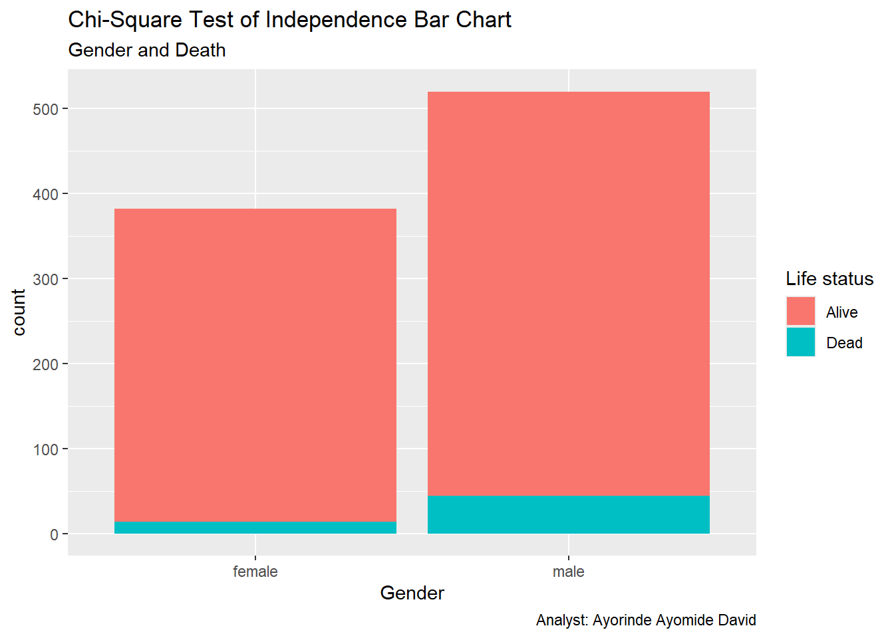

Announcement – Welcome to my portfolio website, a curated space highlighting my academic journey, research endeavors, and analytical projects. Feel free to explore, connect, and engage with my work.
Analysis of COVID-19 Dataset
code
analysis
r
Author
Ayorinde Ayomide David
Published
2025-07-27
In this project, I explored a COVID-19 dataset using R to validate (or challenge) some of the claims and narratives that circulated during the pandemic.
if(!require(pacman)) install.packages("pacman") # Installing the package managerpacman::p_load(tidyverse, # Metapackage here, # R library for coercing Rmarkdown into reading dataset from a seperate folder visdat, # R library for graphical inspection of dataset inspectdf, # R library for the distribution of variables gtsummary, ggplot2 )
# A tibble: 10 × 27
id case_in_country `reporting date` ...4 summary location country gender
<dbl> <dbl> <chr> <lgl> <chr> <chr> <chr> <chr>
1 1 NA 1/20/2020 NA First c… Shenzhe… China male
2 2 NA 1/20/2020 NA First c… Shanghai China female
3 3 NA 1/21/2020 NA First c… Zhejiang China male
4 4 NA 1/21/2020 NA new con… Tianjin China female
5 5 NA 1/21/2020 NA new con… Tianjin China male
6 6 NA 1/21/2020 NA First c… Chongqi… China female
7 7 NA 1/21/2020 NA First c… Sichuan China male
8 8 NA 1/21/2020 NA new con… Beijing China male
9 9 NA 1/21/2020 NA new con… Beijing China male
10 10 NA 1/21/2020 NA new con… Beijing China male
# ℹ 19 more variables: age <dbl>, symptom_onset <chr>,
# If_onset_approximated <dbl>, hosp_visit_date <chr>, exposure_start <chr>,
# exposure_end <chr>, `visiting Wuhan` <dbl>, `from Wuhan` <dbl>,
# death <chr>, recovered <chr>, symptom <chr>, source <chr>, link <chr>,
# ...22 <lgl>, ...23 <lgl>, ...24 <lgl>, ...25 <lgl>, ...26 <lgl>,
# ...27 <lgl>
Code
tail(covid, n =10)
# A tibble: 10 × 27
id case_in_country `reporting date` ...4 summary location country gender
<dbl> <dbl> <chr> <lgl> <chr> <chr> <chr> <chr>
1 1076 14 2/25/2020 NA new COV… Bahrain Bahrain male
2 1077 15 2/25/2020 NA new COV… Bahrain Bahrain male
3 1078 16 2/25/2020 NA new COV… Bahrain Bahrain female
4 1079 17 2/25/2020 NA new COV… Bahrain Bahrain female
5 1080 1 2/25/2020 NA new COV… Innsbru… Austria <NA>
6 1081 2 2/25/2020 NA new COV… Innsbru… Austria <NA>
7 1082 1 2/24/2020 NA new COV… Afghani… Afghan… <NA>
8 1083 1 2/26/2020 NA new COV… Algeria Algeria male
9 1084 1 2/25/2020 NA new COV… Croatia Croatia male
10 1085 1 2/25/2020 NA new COV… Bern Switze… male
# ℹ 19 more variables: age <dbl>, symptom_onset <chr>,
# If_onset_approximated <dbl>, hosp_visit_date <chr>, exposure_start <chr>,
# exposure_end <chr>, `visiting Wuhan` <dbl>, `from Wuhan` <dbl>,
# death <chr>, recovered <chr>, symptom <chr>, source <chr>, link <chr>,
# ...22 <lgl>, ...23 <lgl>, ...24 <lgl>, ...25 <lgl>, ...26 <lgl>,
# ...27 <lgl>
Code
# Inspecting the datasetvis_dat(covid)

Code
inspect_cat(covid) %>%show_plot()

Code
inspect_num(covid) %>%show_plot()

Selecting, cleaning, transformation and manipulation of the variables of interest
Code
covid_selected <- covid %>%select(id,reporting_date ='reporting date', # The initial variable name has to go into quote because it has a whitespace which is unconventional for variable name in R gender, death, age, country)
covid_selected <- covid_selected %>%mutate(death =as.integer(covid$death !=0)) # This overwrite the initial death column by leaving entries as 0 or converting not zero entries to 1covid_selected %>%# checking to confirm if the changes has been effectedselect(death) %>%unique()
# A tibble: 2 × 1
death
<int>
1 0
2 1
Code
covid_selected <- covid_selected %>%mutate(reporting_date =mdy(reporting_date)) # This overwrite the initial reporting date by converting the variable class to Date
Code
covid_selected <- covid_selected %>%mutate(month =month(reporting_date, label = T),month =replace_na(month,"Feb")) # The first mutate chunk create a new column for month and the second replaces na in the month variable with Feb
Code
covid_selected <- covid_selected %>%# Creating a column for continentmutate(continent =case_when( country %in%c("USA", "Canada") ~"North America", country %in%c("France", "Germany", "Italy", "Russia", "UK", "Finland", "Spain","Sweden", "Belgium", "Austria", "Croatia", "Switzerland") ~"Europe", country %in%c("China", "Japan", "Malaysia", "Nepal", "Singapore", "South Korea","Taiwan", "Thailand", "Vietnam", "Cambodia", "Sri Lanka", "UAE", "Hong Kong", "India", "Phillipines", "Iran", "Israel", "Lebanon","Kuwait", "Bahrain", "Afghanistan") ~"Asia", country %in%c("Australia") ~"Oceania", country %in%c("Egypt", "Algeria") ~"Africa",TRUE~"Other"))
Welch Two Sample t-test
data: alive$age and dead$age
t = -10.839, df = 72.234, p-value < 2.2e-16
alternative hypothesis: true difference in means is not equal to 0
95 percent confidence interval:
-24.28669 -16.74114
sample estimates:
mean of x mean of y
48.07229 68.58621
Decision rule: If p-value is < 0.05, we reject null hypothesis, otherwise, we fail to reject null hypothesis
Conclusion: Since the p-value is < 0.05, we reject null hypothesis and conclude that there is a significant difference between the age of those that are dead and those that are alive. In order words, older people are more likely/prone to death if tested positive for COVID-19
Test of Independence
Code
covid_selected <- covid_selected %>%drop_na(gender) %>%mutate(gender_cov =factor(gender),death_cov =factor(case_when(death ==1~"Dead", death ==0~"Alive")))ggplot(covid_selected, mapping =aes(x = gender_cov,fill = death_cov)) +geom_bar() +labs(title ="Chi-Square Test of Independence Bar Chart",subtitle ="Gender and Death",x ="Gender",caption ="Analyst: Ayorinde Ayomide David",fill ="Life status")

Are the proportions of gender independent of life status?
The question above leads us to the hypothesis below
H0: The variables are independent i.e There is no relationship between the variables
H1: The variables are not independent i.e There is a relationship between the variables